- O problema
- Peças são aprovadas pelo WhatsApp e por e-mail, e ninguém tem certeza de qual versão vale nem de quem aprovou.
- O que eu descobri
- Avisar que a peça mudou não é suficiente. Com o aviso na tela, 4 de 5 pessoas não sabiam se a aprovação antiga continuava valendo.
- O que eu propus
- Um link de revisão sem login, comentário preso no ponto da peça, comprovante de aprovação e uma regra explícita: a aprovação vale só para a versão aprovada.
Por que esse problema
Conheço esse problema de perto pela direção de arte: a peça vai pelo WhatsApp, volta com "muda a cor ali" e vira "final_v3_AGORAVAI.png".
Os números confirmam que não é só impressão. Num estudo global com 1.034 profissionais de marketing e agências, uma ideia leva em média 5 rodadas até ser aprovada, contra 3 em 2007. Só 43% das agências dizem que as pessoas certas aprovam, e só 30% recebem feedback claro do cliente.
No Brasil, essa conversa acontece no WhatsApp: 97% dos usuários abrem o app todo dia, e 82% já falaram com empresas por ele.
Fase 1: ouvir quem envia e quem aprova
Conversei com 5 pessoas dos dois lados: uma designer de agência, um designer freelancer, uma profissional de atendimento, um gerente de marketing e uma coordenadora de comunicação. Perguntei sobre a última peça que cada uma aprovou ou mandou aprovar, do começo ao fim.
Nas 5 conversas, apareceram os mesmos quatro padrões:
- O feedback chega espalhado. WhatsApp, e-mail, áudio, ligação, reunião. Na agência, alguém vira tradutor: "Meu trabalho é reunir tudo e transformar em uma solicitação que a criação consiga entender."
- Ninguém sabe qual versão vale. A "final" é deduzida pelo nome do arquivo ou pela última mensagem. Isso já custou caro: uma peça foi publicada com o preço antigo, e o jurídico revisou um arquivo diferente do que o comercial revisava.
- Não está claro quem dá a palavra final. Outra pessoa muda o que já tinha sido aprovado: "Fizemos duas versões sem saber qual orientação seguir."
- As ferramentas são abandonadas por causa do atrito. Quando o cliente precisa criar conta, ele volta para a mensagem.
O que já existe no mercado
Antes de desenhar, olhei como o Filestage e o Frame.io resolvem isso. Segundo a documentação de ajuda dos dois, eles já deixam o cliente revisar sem criar conta. Então "aprovar sem login" não seria diferencial.
Na documentação pública que consultei, nenhum dos dois explica o que acontece com a aprovação quando sobe uma versão nova. Foi esse o espaço que o Aprova passou a ocupar.
O desafio
Como fazer o cliente comentar e aprovar direto na peça, por um link, sem criar conta, e deixar registrado qual versão foi aprovada e por quem?
O MVP
Priorizei por impacto e esforço. Entrou o que resolvia os quatro padrões com menos atrito:
- Link de revisão sem login, feito para ser mandado no WhatsApp e aberto no celular.
- Comentário preso no ponto da peça, na versão em que foi feito.
- Aprovador final definido antes de enviar: outras pessoas comentam, só uma aprova.
- Selo de aprovação com quem aprovou e quando.
- Aviso quando a peça muda depois de aprovada.
Ficaram de fora, por enquanto: revisão por áreas com papéis (jurídico, comercial), comparação lado a lado e importar comentários do WhatsApp. São importantes, mas caras, e o MVP precisava primeiro provar que o cliente usa o link.
Fase 2: protótipo
Montei um protótipo clicável de baixa fidelidade no Figma, com 22 telas principais e um fluxo para cada tarefa de teste. Deixei em cinza de propósito: a ideia era testar o fluxo antes de cuidar do visual.
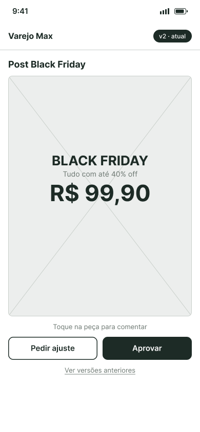
RevisãoO cliente abre o link no celular.
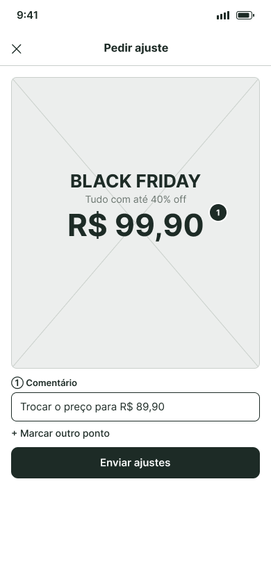
ComentarO ajuste fica preso no ponto da peça.
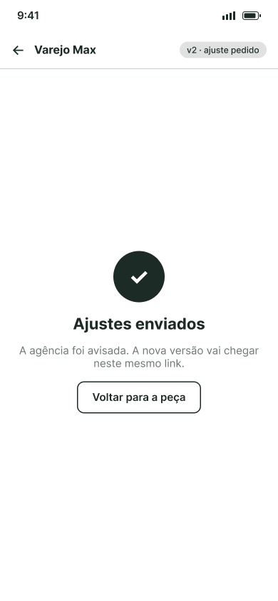
EnviadoA nova versão chega no mesmo link.
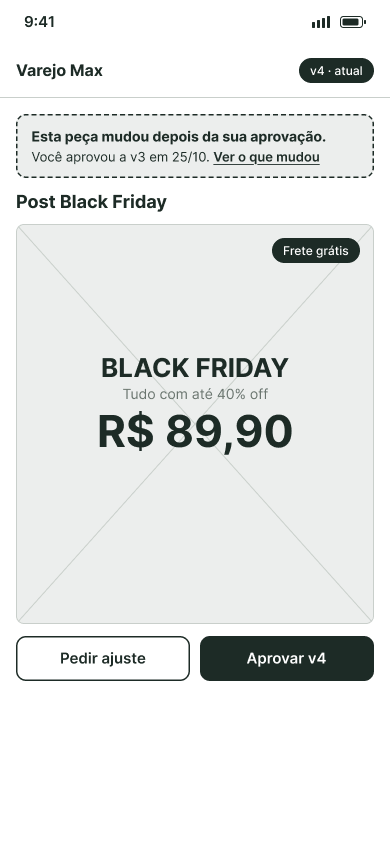
MudouO aviso da primeira versão.
Fase 3: teste de usabilidade
Testei com 5 pessoas que não tinham participado das conversas: 3 do lado da agência e 2 do lado do cliente. Depois de cada tarefa, a pessoa dava uma nota de facilidade de 1 a 7.
| Tarefa | Nota média (1 a 7) |
|---|---|
| Pedir e conferir ajustes | 6,5 a 7,0 |
| Encontrar a peça e ver o status | 6,7 |
| Consultar o histórico e a situação final | 5,0 |
| Cliente: perceber que a peça mudou depois de aprovar | 4,5 |
| Agência: identificar uma alteração depois da aprovação | 4,0 |
A base do fluxo funcionou. As duas notas abaixo de 5 caíram no mesmo momento: a peça mudou depois de aprovada.
O detalhe que mais me ensinou: o aviso de mudança já existia no protótipo. Mesmo assim, 2 das 5 pessoas tiveram dificuldade para perceber a mudança, e 4 de 5 disseram não ter certeza se a aprovação anterior continuava valendo. Uma participante resumiu: "O mais confuso foi entender se a aprovação anterior continuava válida depois de uma modificação."
O redesenho
O problema não pedia funcionalidade nova. Pedia que a tela dissesse a consequência, e não só o fato. Arraste a barra para comparar o aviso antes e depois do teste.
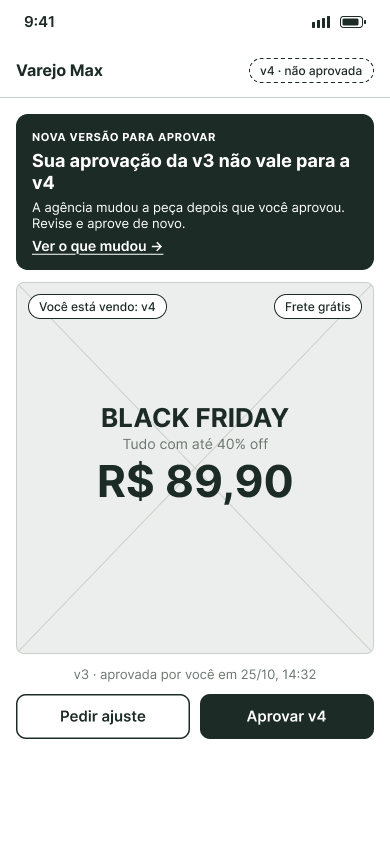
- AntesUma faixa tracejada, com o mesmo peso do resto, dizia que a peça tinha mudado. Não dizia o que fazer.
- DepoisO aviso vira a manchete e diz a consequência: "Sua aprovação da v3 não vale para a v4. Revise e aprove de novo."
- A peça diz qual versão está na tela. "Você está vendo: v4 · não aprovada", com abas para ver cada versão.
- As duas versões aparecem lado a lado no status. A v4 pendente e a v3 aprovada, que "não vale para a v4".
- O histórico virou linha do tempo. Quem fez o quê, quando, e o estado de cada versão: atual, aprovada ou substituída.
- A aprovação virou comprovante. Peça, versão, quem, quando e um código, salvo no link. A agência recebe um aviso e pode baixar a versão aprovada.
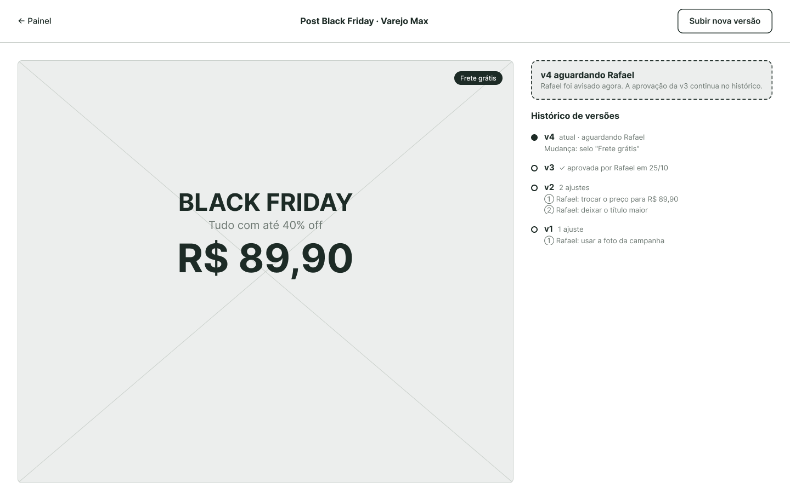
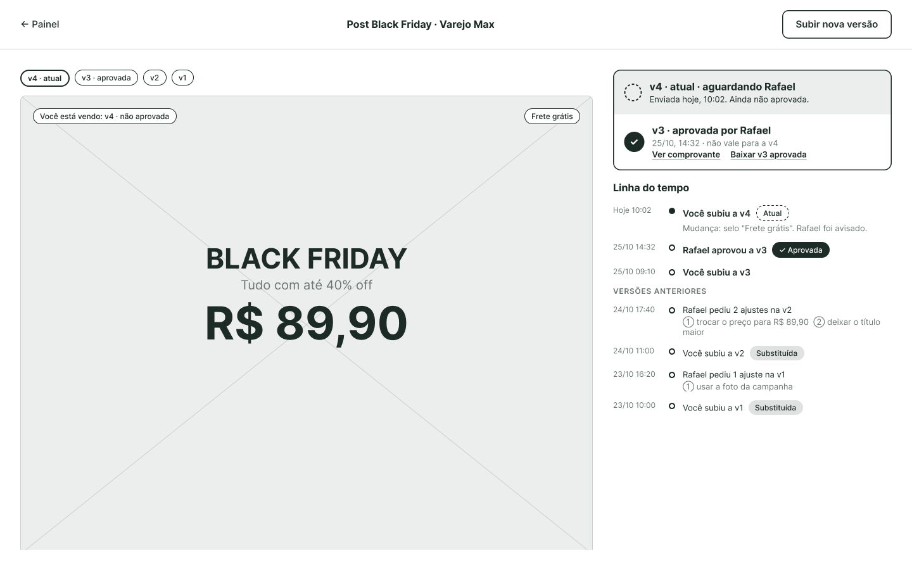
Validando sem novos participantes
Não consegui recrutar pessoas novas para um reteste. Em vez de pular a validação, troquei de método: fiz uma avaliação heurística, com as heurísticas de Nielsen que se aplicavam a essas telas, e um percurso cognitivo das duas tarefas que falharam, comparando a versão antiga com a nova.
| Problemas por gravidade | v1 | v2 | v2.1 |
|---|---|---|---|
| Catastróficos | 1 | 0 | 0 |
| Graves | 4 | 1 | 0 |
| Pequenos | 4 | 1 | 0 |
| Cosméticos | 1 | 3 | 1 |
A avaliação achou algo que o teste não mostrou: na v1, depois que uma versão nova subia, o painel continuava mostrando "Aprovada". A agência poderia publicar o arquivo não aprovado. Era um estado que eu simplesmente não tinha desenhado.
Ela também achou problemas na própria v2. O principal: com uma versão nova pendente, a agência não conseguia baixar a versão aprovada. Na v2.1, corrigi isso, deixei cada cor de status com um significado só e ajustei os textos com contraste abaixo do mínimo de acessibilidade.
O visual final
Com o fluxo validado, desenhei a versão em alta fidelidade, partindo de uma pergunta: o que a cor precisa dizer?
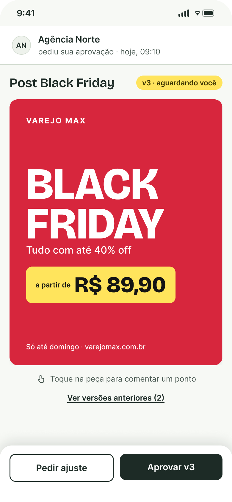
RevisãoA peça em primeiro plano.
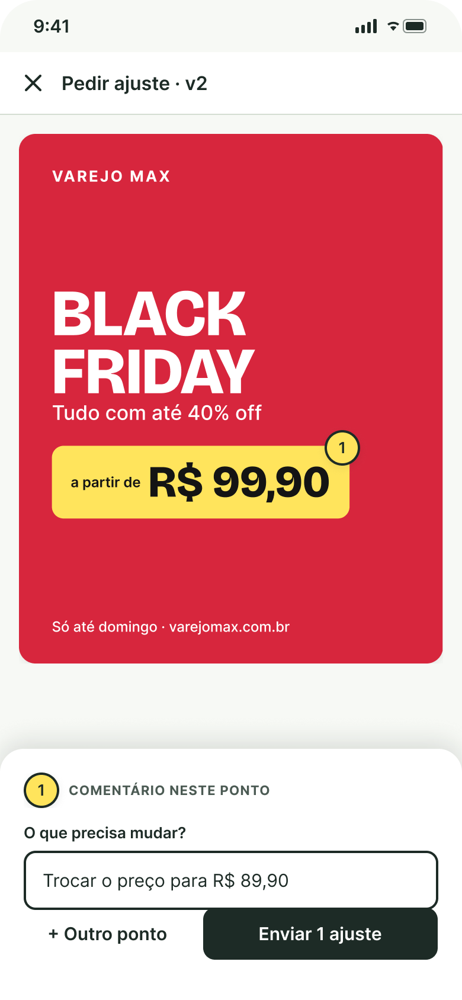
Comentar um pontoUma ação principal: enviar.
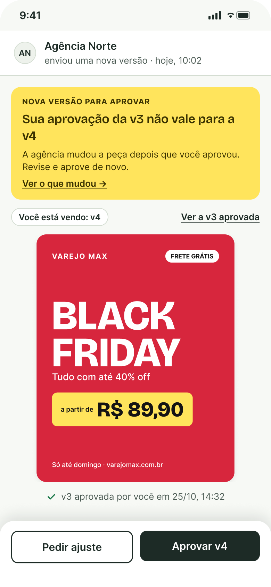
Mudou depois de aprovadaO único amarelo forte do produto.
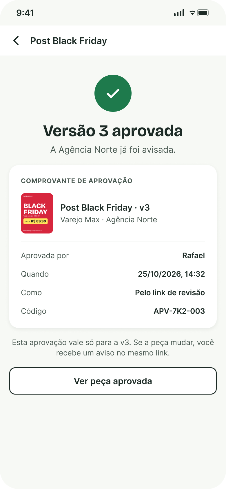
ComprovanteA aprovação fica registrada.
- A peça é a estrela. Quem aprova está ali para olhar a peça do cliente, que é o elemento mais colorido da tela. O resto da tela fica em neutros esverdeados e só usa cor quando a cor quer dizer alguma coisa.
- 60-30-10. Cerca de 60% da tela é base neutra, 30% é verde-musgo (texto e ação principal) e 10% são acentos. Quando o acento é raro, ele chama atenção.
- Cada cor tem um significado, e nunca aparece sozinha. Verde com ✓ quer dizer aprovada; amarelo, que alguém precisa agir; tracejado, que a vez é do outro lado; cinza, que virou histórico.
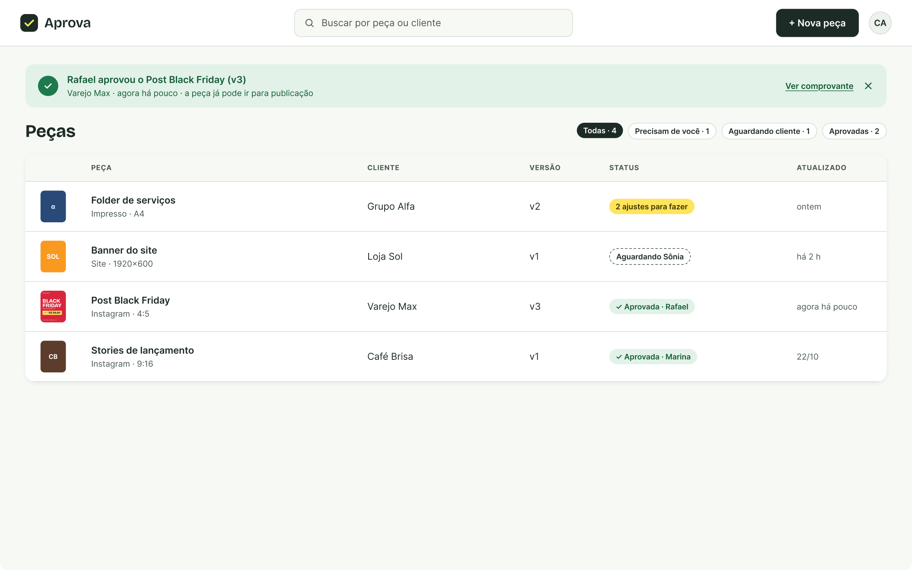
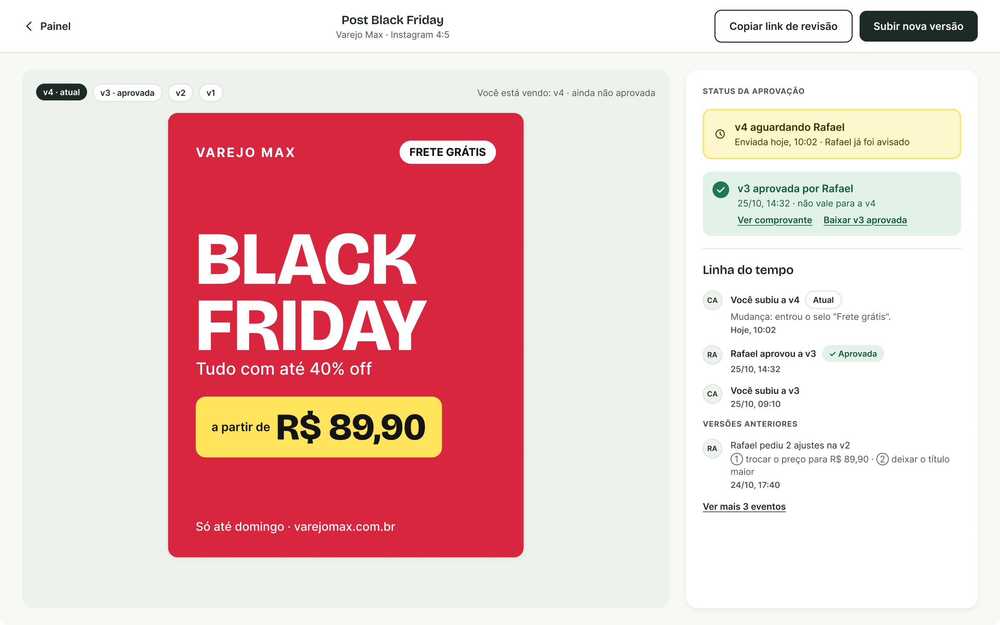
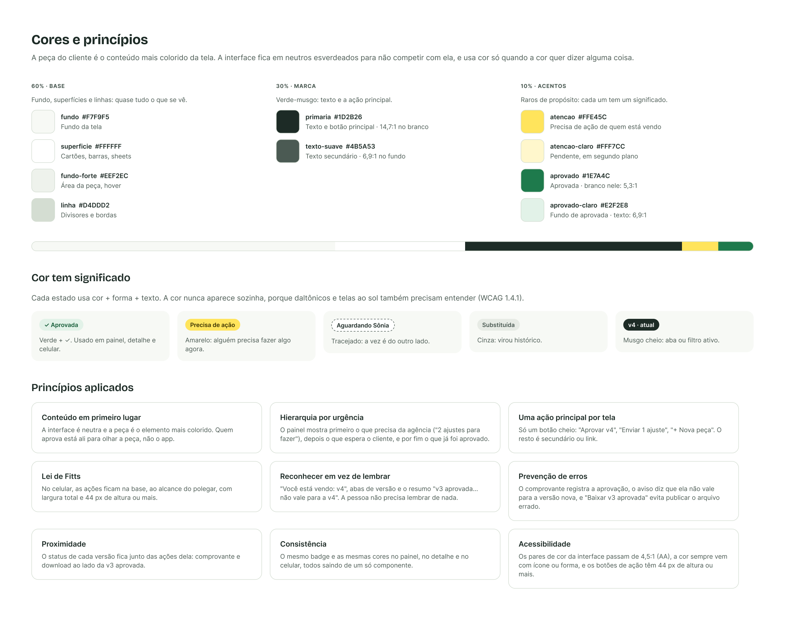
Como usei IA
Usei o Claude como assistente para organizar a pesquisa e buscar fontes.
Próximos passos
- Reteste com 2 ou 3 pessoas novas, só nas duas tarefas que falharam. Meta: nota 5 ou mais.
- Várias aprovações ao mesmo tempo. Hoje o aviso do painel mostra uma peça só. A próxima versão agrupa: "3 peças aprovadas hoje".
- O que eu mediria depois do lançamento: rodadas de ajuste por peça (a métrica principal, já que o mercado está em 5), quantas aprovações acontecem pelo link e quantos dias se passam entre o envio e a aprovação.
O que aprendi
Uma informação na tela não é o mesmo que uma informação entendida. O aviso estava lá. Faltava destaque, e faltava dizer o que ele significava.
Estados que ninguém desenha são onde o produto quebra. O painel dizendo "Aprovada" para uma versão não aprovada nasceu de uma tela que eu não tinha previsto.
Quando não dá para fazer o método ideal, troque de método e diga isso. É melhor do que pular a validação ou fingir que ela aconteceu.
Fontes: BetterIdeas Project, 2025 (via AMI) e WFA; pesquisa Opinion Box sobre WhatsApp, 2025 (via Canaltech); documentação de ajuda do Filestage e do Frame.io; fórum do Frame.io. Consultadas em 25/10/2026.